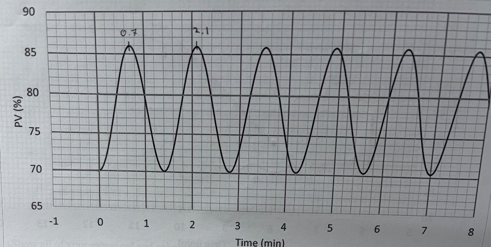
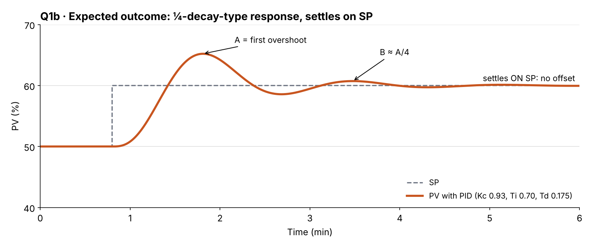
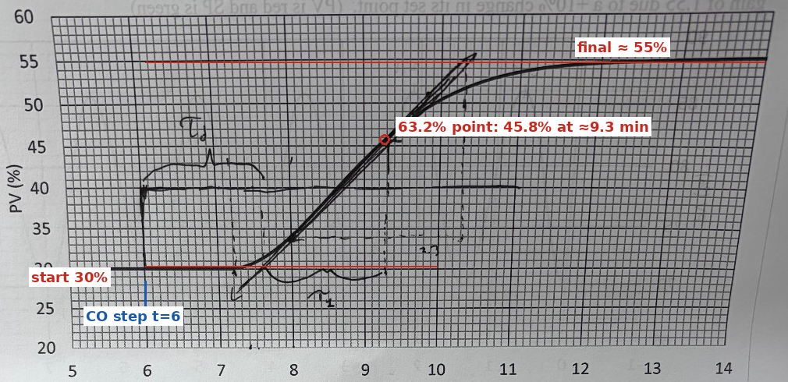
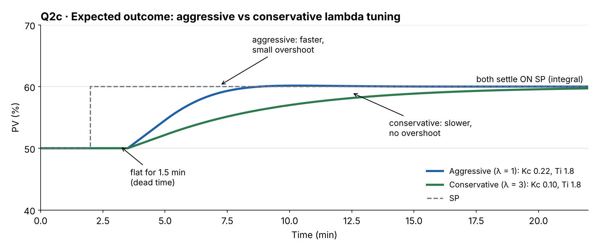
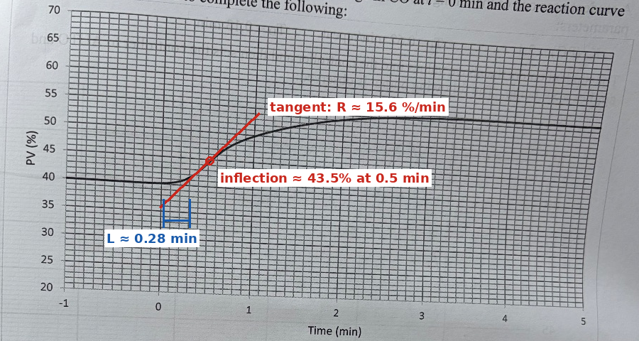
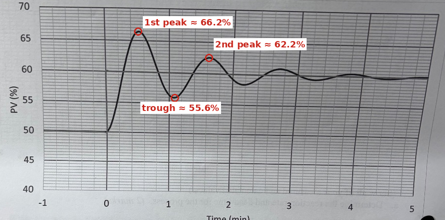

CNTR 2371 · ZN closed loop, lambda, ZN open loop and decay ratio. Values were read from photos of the charts, so your own readings may differ by a few tenths; use the same steps with your numbers.

| Reading | Value | Why |
|---|---|---|
| Peak / trough heights | ≈ 86.5% / ≈ 70%, the same every cycle | sustained oscillation, DR = 1 |
| Kcu | 1.55 | the gain that gave sustained oscillation |
| To (peak to peak) | 2.1 − 0.7 = 1.4 min | period of the oscillation |
Kc = 0.6 × Kcu = 0.6 × 1.55 = 0.93 Ti = To / 2 = 1.4 / 2 = 0.70 min/repeat Td = To / 8 = 1.4 / 8 = 0.175 min (≥ 0.1 min, so PID, not PI)

Label: A (first overshoot), B ≈ A/4 (second overshoot), and "settles on SP, no offset (integral action)".

| Reading | Value |
|---|---|
| Start / final PV | 30% → ≈ 55%, so ΔPV = 25% |
| Dead time τd | 1.5 min (from the CO step at 6 min to where the PV starts to rise, about 7.5 min) |
| 63.2% point | 30 + 0.632 × 25 = 45.8%, reached at ≈ 9.3 min |
| Time constant τ1 | 9.3 − 7.5 = 1.8 min |
| Process gain Kp | ΔPV / ΔCO = 25 / 10 = 2.5 |
Gp(s) = Kp·e^(−τd·s) / (τ1·s + 1) = 2.5 e^(−1.5s) / (1.8s + 1) Larger of τ1 (1.8) and τd (1.5) = 1.8 → τc = 1 × 1.8 = 1.8 Kc = τ1 / [Kp(τc + τd)] = 1.8 / [2.5(1.8 + 1.5)] = 1.8 / 8.25 = 0.22 Ti = τ1 = 1.8 min/repeat
τc = 3 × 1.8 = 5.4 Kc = 1.8 / [2.5(5.4 + 1.5)] = 1.8 / 17.25 = 0.10 Ti = τ1 = 1.8 min/repeat
The reaction rate R (≈ 9.1 %/min) belongs to the ZN open-loop method. Lambda tuning does not use it.

Label both curves. Both stay flat for the 1.5 min dead time. Aggressive rises faster (a small overshoot is possible); conservative is slower with no overshoot. Both settle on SP.

Method and definitions from the coursepack, Section 5.2 (Ziegler–Nichols Open Loop Tuning, Reaction Curve Method).
Obtain recording and determine LR & L. ΔCO = +10% (step at t = 0 min)
Draw the tangent line at the inflection point (or steepest slope):
inflection ≈ 43.5% at ≈ 0.5 min
R = slope of tangent line at inflection point
R = ΔPV / time (units %/minute)
= (50 − 40)% / (1.0 − 0.23) min ← two points read off the tangent
≈ 13 %/min
L = the dead time (time in minutes from step change to intersection of tangent line
with the original PV of 40%)
≈ 0.23 min
RL = R·L (units %) = measurement of the tangent line from the original PV
at the time of output change (t = 0)
= 13 × 0.23 ≈ 3.0%
check: at t = 0 the tangent is at ≈ 37%, i.e. 40 − 37 = 3.0% below the original PV
PID: Kc = 1.2 ΔCO / (LR) = 1.2 × 10 / 3.0 = 4.0
Ti = 2L = 2 × 0.23 = 0.46 min/repeat
Td = 0.5L = 0.5 × 0.23 = 0.115 min
Check: Td ≥ 0.1 min, so PID is used.
(Coursepack: "If calculated Td for a PID is less than 0.1 min use a PI controller (re-calculate).")
Rate/Reset = 0.115 / 0.46 = ¼ ✓
Readings come from a photo, so yours may differ slightly. Read R and L from the same tangent line. If your L gives Td under 0.1 min, re-calculate as PI: Kc = 0.9 ΔCO / (LR), Ti = 3.33 L.

Formula from the coursepack, Section 5.3 (Decay Ratio = DR = B/A); measurement done the way the solved sheets do it (Q8, Q9). Answers for b and c use the coursepack's fine-tuning rules (5.3 Step 5 and 5.5 Trial and Error).
Measured: 1st peak ≈ 66.2%, trough after it ≈ 55.6%, 2nd peak ≈ 62.2% Decay Ratio = DR = B / A A = 1st peak − trough = 66.2 − 55.6 = 10.6 B = 2nd peak − same trough = 62.2 − 55.6 = 6.6 These are half-cycle swings, so square the ratio (as on the solved sheets): DR = (B / A)² = (6.6 / 10.6)² = (0.62)² ≈ 0.39 Desired ¼ amplitude decay: DR = 0.25. 0.39 > 0.25 → too oscillatory.
Coursepack (5.3 Step 5): "Increasing KC increases the speed of response, but also makes the loop less stable."
Coursepack (5.3 Step 5): "Increasing KI (decreasing TI) increases the cyclic period, but also makes the loop less stable." Coursepack (5.5): "keep the ratio between reset and rate (reset/rate = ¼) the same." Current: Td / Ti = 0.13 / 0.52 = ¼